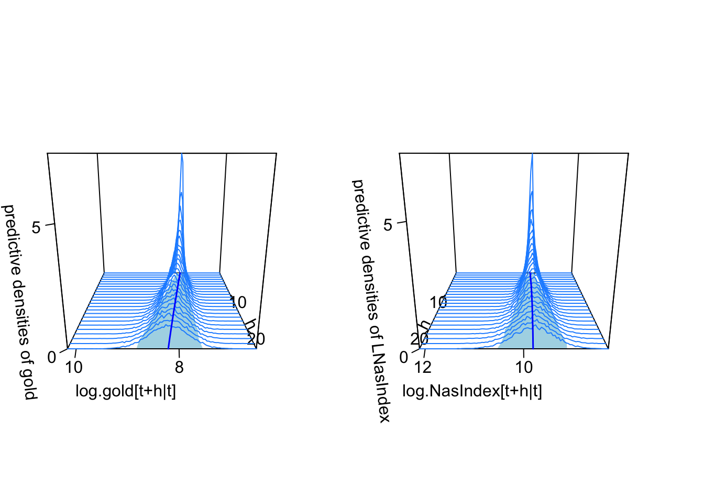

An Evidence-based Forecast: Gold as a Traditional Safe-Haven Investment
Abstract. This research aims to explore future trends in Gold prices as a traditional safe-haven investment using a Bayesian VARs model. In the wake of the 2008 financial crisis and especially the 2019 global Covid-19 pandemic, the world economy appears to be on the brink of a looming risk: a world-wide economic recession. The concern over the risk of investment returns has become a primary focus for global investors and financial institutions. This unease has been further exacerbated by geopolitical conflicts such as the Russia-Ukraine war (2022) and the Israeli-Palestinian conflict (2023). Consequently, this research aims to provide a briefly discussion and data-driven forecast of traditional safe-haven assets: Gold, under current circumstances. Factors considered include emerging safe-haven investments, risk-free investment assets, comparable investments, market returns, inflation on both demand and supply sides, broad money supply (M2), interest rates, unemployment rates and market volatility.
Keywords. Bayesian VARs, Gold price, Inflation, Interest rate, Unemployment, US Bond Yield, Safe-haven Assets, Forecasting, Volatility, R, Quarto.
Introduction
Objective:
This research project aims to provide a monthly based, data-driven forecast of Gold price(USD) in two years, utilizing a Bayesian VARs model.
Question:
Gold as a traditional safe-haven asset, what are the anticipated price movements for the next year or beyond within the current environment?
Introduction:
Ulrich Beck introduced the concept of the risk society in the late 20th century, highlighting how humans confront entirely different systemic risks and face challenges in risk allocation under industrial society. Concurrently, globalization has reshaped the world and transformed human perceptions and experiences. Increasingly, evidence suggests that humanity is entering the risk society as described by Beck. Globalization encompasses not only economic, finance, technologe, and culture, but also risks. A China’s financial exchange restriction might influence Australia’s housing prices, while decisions made by the U.S. Central Bank regarding interest rates can prompt Western central banks to follow suit simultaneously. Following the 2008 financial crisis, major economies mitigated its aftermath significantly through quantitative easing monetary policies. This injection of substantial liquidity propelled economic growth steadily, leading to unprecedented prosperity in specific industries. However, the limitations of quantitative easing became apparent as the Covid-19 pandemic drew to a close. The United States and Western countries experienced unprecedented hyperinflation, coupled with indicators such as rising unemployment rates inversely correlated with inflation, conflicting long-term government bond yields with short-term treasuries, and record-breaking composite indices, signaling an impending global recession.
Geopolitical conflicts, such as the Russia-Ukraine war and the Israeli-Palestinian conflict, have intensified various risks. Disruptions in oil supply, blockages in key waterways, and logistical challenges in transporting goods and agricultural products have further exacerbated commodity price hikes and inflationary pressures. Consequently, mitigating or hedging investment risks has become the primary focus for global investors and financial institutions.
Among various safe-haven investments, gold has regained popularity as a hedge against uncertainty. This research aims to provide investors with a data-supported prediction of gold price trends over the next two years using Bayesian VAR models. The study incorporates information on comparable and emerging hedging products, market risks, returns, unemployment rates, inflation, interest rates, and other relevant parameters to construct a robust Bayesian VAR model. Ultimately, this research aids investors in identifying gold price trends and confidence intervals under different uncertainties within the current environment, thereby mitigating investment risks effectively.
Data and Data Properties
To enhance the accuracy of gold price predictions, a total selection of 12 variables has been chosen, encompassing gold competitors, risk-free assets, and the Nasdaq index. From a broader macroeconomic standpoint, the variables also include inflation, the Producer Price Index (PPI), unemployment rates, crude oil prices, volatility indices, the dollar index, changes in the M2 money supply level, and federal fund effective rates.
\(GoldFutures_{t}\) : Gold future price in USD per ounce, as considering the expectations in further gold price movements and high liquidity safe haven currency than real product.
Competitors and Substitutes for Gold ：
- Risk-free assets: treasury bonds
- \(13WeekNotes_{t}\) : Considering as short-term risk free assets return. More time using in short term risk hedging in portfolio.
- \(Tbill(5Year)_{t}\) : Considering as mid-term risk free assets return.
- \(Tbill(10Year)_{t}\) : Considering as long-term risk free assets return.
- Risk-free assets: treasury bonds
Market returns as opposed to safe-haven investments： - \(NasdaqIndex_{t}\) ：Index that include all stocks available in NASDAQ to present the market returns.
Macro environment：
- \(M2_{t}\) : the Board money supply of United States cause price index goes up.
- \(Infla_{t}\) : CPI Index that present whole price level changes of all goods and services in US. Gold price are highly correlated with inflation.
- \(Unemp_{t}\) : unemployment rate provide by Bureau of Statistic of US to present a general environment of Labor market.
- \(CrudeOil_{t}\) : to present as basic cost of production.
- \(FFERs_{t}\) : As the Federal Funds Effective Rates aim to lower the inflation, decrease the M2 level.
- \(USDIndex_{t}\) : to present as the purchasing power of USD cross world-wide. That increase the total amount of investors and financial institutions come into US market to earn higher returns.
- \(VolatilityIndex_{t}\) : to present the risk cross whole market and expectations of further coming events.
After download all variables as designed, merge all data sets into a new frame and change the column names. The date of data used in this research will start at 2004-08-31 as at 2024-03-31.
Plots of all variables

As above, we could have all 12 variables in visualization format individually. As a quick overlook, 13 weeks bond has a similar trend with federal funds effective rates; other 2 treasury bonds move quite same; gold future, Nasdaq, crude oil price and US dollars Index have upper ward trends; Unemployment rates seems like opposite to federal rates; M2 and other 2 time series seems like stationary on mean but variance change over time.
Correlation Table

A simple correlation provide us a basic understanding of those 12 variables. Gold future as safe-haven is highly positive correlated with Nasdaq Index.
Therefore, we could use ACF and PACF test to indicate whether there is autocorrelations.


Both ACF and PACF suggest that variables are highly autocorrelated except M2: Board money change rate. That might because the policy has changed in earlier 2020 and 2022. Therefore, we further need ADF test(unit root test) to feed our time series are stationary or not.
| P-value | |
|---|---|
| GFutures_data | 0.741 |
| TBill13W_data | 0.530 |
| TBill5Y_data | 0.911 |
| TBill10Y_data | 0.902 |
| Nasdaq_data | 0.860 |
| M2_data | 0.010 |
| InflaR_data | 0.059 |
| UnempR_data | 0.323 |
| CrudeOil_data | 0.305 |
| InterestR_data | 0.329 |
| USDIndex_data | 0.596 |
| Volatility_data | 0.017 |

Modeling and Hypothesis
This research project based on Bayesian VARs(p) model to forecast the Gold price in next two years. For time \(t\) = {1,2,3,…,\(T-1\),\(T\)} :
\[\begin{aligned} y_t &= \mu_0 + A_1y_{t-1} + A_2y_{t-2}...+A_py_{t-p} +\epsilon_t\\ \epsilon_t|Y_{t-1} &\sim iid \mathcal{N}_{12}(0_{12}, \Sigma) \end{aligned}\]Where N = 12 and \(y_{t}\) is a vector of 12 variables at time \(t\):
\[\begin{aligned} y_{t}=\begin{pmatrix} GoldFutures_{t}\\ 13WeekNotes_{t}\\ Treasurybill(5Year)_{t} \\ Treasurybill(10Year)_{t} \\ NasdaqIndex_{t} \\ M2_{t} \\ Inflation_{t} \\ Unemployment_{t}\\ CrudeOil_{t}\\ FFERs_{t} \\ USDollarIndex_{t}\\ VolatilityIndex_{t}\\ \end{pmatrix} \end{aligned}\]For time \(t\) = 1,2,…..,\(T\)：
- \(y_t\) is a \(N(12)\times 1\) vector of observations at time \(t\)
- \(\mu_0\) is a \(N(12)\times 1\) vector of constant terms
- \(A_i\) is a \(N(12)\times N(12)\) matrix of autoregressive slope parameters
- \(\epsilon_t\) is a \(N(12)\times 1\) vector of error terms which is a multivariate white nose process(time invariant)
- \(Y_{t-1}\) is the information set collecting observations on y up to time \(t-1\)
- \(\Sigma\) is a \(N(12)\times N(12)\) covariance matrix of the error term
Matrix Notation for the model:
Matrix form are used to simplify the notation and the derivations. Let \(T\) be the available sample size for the variable \(y\) and \(K\) be the sum of lags and constant term (\(K = 1 + pN\)). Define a identity matrix of order \(T\), \(I_T\), as well as following matrix:
\[\begin{aligned} A= \begin{bmatrix} \mu_{0}' \\ A_{1}' \\ A_{2} '\\.\\.\\.\\A_{p}' \end{bmatrix}_{K \times N} Y= \begin{bmatrix} y_{1}' \\ y_{2}' \\ y_{3} '\\.\\.\\.\\y_{T}' \end{bmatrix}_{T \times N} x_t= \begin{bmatrix} 1 \\ y_{t-1}' \\ y_{t-2} '\\.\\.\\.\\y_{t-p}' \end{bmatrix}_{K \times 1} X= \begin{bmatrix} x_{1}' \\ x_{2}' \\ x_{3} '\\.\\.\\.\\x_{T}' \end{bmatrix}_{T \times K} E= \begin{bmatrix} \epsilon_1' \\ \epsilon_2' \\ \epsilon_3 '\\.\\.\\.\\\epsilon_T' \end{bmatrix}_{T \times N} \end{aligned}\]Then the model can be written in a concise notation as:
\[\begin{aligned} Y &= X A +E \\ \\ E|X &\sim \mathcal{MN}_{T\times N}(\textbf{0},\Sigma,I_T) \end{aligned}\]Given that the density function of Matrix-variate Normal distribution \(Z\sim \mathcal{MN}_{T\times N}(M,Q,P)\) is:
\[\begin{aligned} \mathcal{MN}_{T\times N}(M,Q,P) & =c^{-1}_{mn}exp\left\{ -\frac{1}{2}\textbf{tr}\left[ Q^{-1}\left( Z-M \right)'P^{-1}\left( Z-M \right) \right] \right\}\\ c_{mn} & = \left( 2\pi \right)^{\frac{TN}{2}}det\left( Q \right)^{\frac{T}{2}}det\left( P \right)^{\frac{N}{2}} \end{aligned}\]Base on the model above, we could first turn B Vars(p) model into B Vars(1) model and easily regress to have the parameter matrix. Then we could have a \(t+h\) period forward forecasting with increase of variance, in this case: \(h\) = 24.
The main focus of estimate output is the conditional mean of Gold price, which base on current information set \(Y_{t-1}\). It provide the average mean prediction of Gold price which investors and financial institutions interested in. Moreover, 1 standard deviation and 2 standard deviation will also produced in forecasting process to provide a 68% and 95% of confidence intervals of future Gold price movements in \(h\) periods base on current information set.
Furthermore, different prior distribution might be used to provide different level of uncertainty of current environment(information set). Compare the difference of Gold price under different priors could help to prove the Gold as a high quality safe-haven investment and increase investors and financial institutions confidence and further expectations. (Competitors for golds might also be used under different priors, such as Nasdaq Index and short to mid-term treasury bills.)
Likelihood Function
The model equation imply the predictive density of the data vector \(Y\). We could consider the model equation is the linear transformation of the matrix-variate normal distribution \(E\). Therefore, the data vector also follows a matrix-variate normal distribution given by:
\[\begin{aligned} Y|X,A,\Sigma &\sim \mathcal{MN}_{T\times N}(XA,\Sigma,I_T) \end{aligned}\]This distribution determines the shape of the likelihood function that is defined as the sampling data density:
\[\begin{aligned} L(A,\Sigma | Y,X)\equiv P(Y|X,A,\Sigma) \end{aligned}\]The likelihood function for the parameters estimation (\(A,\Sigma\)), and after plugging in data in place of \(Y,X\), is considered a function of parameters \(A\) and \(\Sigma\) is given by:
\[\begin{aligned} L(A,\Sigma | Y,X) &= \left( 2\pi \right)^{-\frac{TN}{2}}det\left( \Sigma \right)^{-\frac{T}{2}}exp\left\{ -\frac{1}{2}\sum_{t=1}^{T}\epsilon_{t}'\Sigma^{-1}\epsilon_{t} \right\} \\ &= \left( 2\pi \right)^{-\frac{TN}{2}}det\left( \Sigma \right)^{-\frac{T}{2}}exp\left\{ -\frac{1}{2}\sum_{t=1}^{T} \left( y_{t}-A'x_{t} \right)'\Sigma^{-1}\left( y_{t}-A'x_{t} \right)\right\} \\ &= \left( 2\pi \right)^{-\frac{TN}{2}}det\left( \Sigma \right)^{-\frac{T}{2}}exp\left\{ -\frac{1}{2}vec\left(\left( Y-XA \right)'\right)' \left( I_T\otimes \Sigma^{-1} vec\left(\left( Y-XA \right)'\right)\right)\right\} \\ &= \left( 2\pi \right)^{-\frac{TN}{2}}det\left( \Sigma \right)^{-\frac{T}{2}}exp\left\{ -\frac{1}{2}\textbf{tr}\left[\Sigma^{-1}\left( Y-XA \right)'I^{-1}_T\left(Y-XA \right) \right] \right\} \\ &= \left( 2\pi \right)^{-\frac{TN}{2}}det\left( \Sigma \right)^{-\frac{T}{2}}exp\left\{ -\frac{1}{2}\textbf{tr}\left[\Sigma^{-1}\left(Y-XA\right)'\left(Y-XA\right) \right] \right\} \end{aligned}\]Given that the trace:
- \(\textbf{tr}\left( X \right) = \sum_{n=1}^{N}X_{nn} \ \ \ \ \text{for a }N \times N\text{ matrix }X\)
- \(\textbf{tr}\left( ABCD \right) = vec(D')'\left( C'\otimes A \right)vec(B)\)
Prior Distribution
For the given model, we assume that unknown parameters have following distributions:
\[\begin{aligned} A|\Sigma &\sim \mathcal{MN}_{K\times N}(M,\Sigma,P) \\ \Sigma &\sim \mathcal{IW}_{N}(S,\nu) \end{aligned}\]where \(A_{K \times N}|\Sigma\) follow a matrix-variate normal distribution:
- \(M\) is the mean of matrix normal distribution
- \(\Sigma_{N \times N}\)is the row specific covariance matrix
- \(P_{K \times K}\) is the column specific covariance matrix with the density given by:
\[\begin{aligned} \mathcal{MN}_{K\times N}(M,\Sigma,P) & =c^{-1}_{mn}exp\left\{ -\frac{1}{2}\textbf{tr}\left[ \Sigma^{-1}\left( A-M \right)'P^{-1}\left( A-M \right) \right] \right\}\\ c_{mn} & = \left( 2\pi \right)^{\frac{KN}{2}}det\left( \Sigma \right)^{\frac{K}{2}}det\left( P \right)^{\frac{N}{2}} \end{aligned}\]And \(\Sigma\) follow a Inverse Wishart distribution:
- \(S\) is N × N positive definite symmetric matrix called the scale matrix.
- \(\nu\) > N + 2 denotes degrees of freedom. with the density given by:
\[\begin{aligned} \mathcal{IW}_{N}(S,\nu) &= c^{-1}_{iw}det(\Sigma)^{-\frac{\nu + N+1}{2}}exp\left\{ -\frac{1}{2} \textbf{tr}\left[ \Sigma^{-1} S\right]\right\}\\ c_{iw} &= 2^{\frac{\nu N}{2}}\pi^{\frac{N(N-1)}{4}}\prod_{n=1}^{N}\Gamma\left( \frac{\nu + n + 1}{2} \right)det(S)^{-\frac{\nu}{2}} \end{aligned}\]Then the joint distribution of (\(A,\Sigma\)) is Normal-Inverse Wishart:
\[\begin{aligned} P(A,\Sigma) & \sim \mathcal{NIW}_{K \times N}(M,P,S,\nu) \end{aligned}\]with the density given by:
\[\begin{aligned} P(A,\Sigma) &= c^{-1}_{nw}det(\Sigma)^{-\frac{\nu + N + K + 1}{2}}\\ &\times exp\left\{ -\frac{1}{2}\textbf{tr}\left[ \Sigma^{-1}\left( A-M \right)'P^{-1}\left( A-M \right) \right] \right\}\\ &\times exp\left\{ -\frac{1}{2} \textbf{tr}\left[ \Sigma^{-1} S\right]\right\} \\ \\ c_{nw} &= 2^{\frac{N(K + \nu)}{2}}\pi^{\frac{N(N + 2K -1)}{4}}[\prod_{n=1}^{N}\Gamma\left( \frac{\nu + 1 - n}{2} \right)]det\left( P \right)^{\frac{N}{2}}det(S)^{-\frac{\nu}{2}} \end{aligned}\]Natural-conjugate prior distribution
Leads to joint posterior distribution for (\(A,\Sigma\)) has the same form as prior:
\[\begin{aligned} P(A,\Sigma) &= P(A|\Sigma)P(\Sigma) \\ A|\Sigma &\sim \mathcal{MN}_{K\times N}(\underline{A},\Sigma,\underline{V}) \\ \Sigma &\sim \mathcal{IW}_{N}(\underline{S}, \underline{\nu}) \end{aligned}\]with the kernel given by:
\[\begin{aligned} P(A,\Sigma) &\propto \det(\Sigma)^{-\frac{N+K+\underline{\nu}+1}{2}} \\ &\times exp\{-\frac{1}{2}tr[\Sigma^{-1}(A-\underline{A}) \underline{V}^{-1}(A-\underline{A})]\} \\ &\times exp\{-\frac{1}{2}tr[\Sigma^{-1}\underline{S}]\} \end{aligned}\]Benchmark model with Minnesota prior
In real life, macroeconomic variables are more likely being unit-root non stationary and are well-characterized by a multivariate random walk process：
\[\begin{aligned} y_{t} = y_{t-1} + \epsilon_t \end{aligned}\]Therefore, our benchmark model uses Minnesota prior(1984) based on random walk process for our Bayesian forecasting.
Set the prior mean \(A\) to:
\[\begin{aligned} \underline{A}=\left[ 0_{N\times1} \ \ \ \ I_{N} \ \ \ \ \ 0_{N\times(p-1)N} \right]' \end{aligned}\]which means the mean of first lag equal to 1 and mean of constant term and other lags are 0.
Set the column specific prior covariance of \(A\) (prior shrinkage)to:
\[\begin{aligned} \underline{V} = diag\left[ \kappa_{2} \quad \kappa_{1}(\textbf{P} ^{-2}\otimes \textbf{i}^{'}_{N}) \right] \end{aligned}\]where:
\(\textbf{P}\) is the list of legs, \(\textbf{P} \ \ \ =\left[ 1 \quad 2 \quad 3\quad ... \quad p \right]\)
\(\textbf{i}^{'}_{N}\) is a \(N \times 1\) vector of ones
\(\kappa_{1}\): overall shrinkage level for autoregressive slopes
\(\kappa_{2}\): overall shrinkage for the constant term
therefore, we could have the variance of \(A\):
\[ VAR\left[ vec\left( A \right) \right]\quad = \quad \Sigma \ \ \otimes \ \ \underline{V} \]
Bayesian Estimations
Based on Bayes’ Theorem:
\[\begin{aligned} P(A|B) & =\frac{P(B|A)P(A)}{P(B)} \end{aligned}\]We could have the kernel of conditional joint posterior distribution \(P(A,\Sigma|Y,X)\), which is the proportion of the product between conditional distribution of data \(P(Y|X,A,\Sigma)\) and joint prior distribution \(P(A,\Sigma)\):
\[\begin{aligned} P(A,\Sigma|Y,X) &= \frac{P(Y|X,A,\Sigma) \ P(A,\Sigma)}{P(Y)}\\ &\propto P(Y|X,A,\Sigma) \ P(A,\Sigma)\\ &\propto L(A,\Sigma | Y,X) \ P(A|\Sigma) \ P(\Sigma) \\\\ \end{aligned}\]And the kernel of conditional joint posterior distribution is given by:
\[\begin{aligned} P(A,\Sigma|Y,X) &\propto L(A,\Sigma | Y,X) \ P(A,\Sigma)\\ &\propto det(\Sigma)^{-\frac{T}{2}} \\ &\times exp\{-\frac{1}{2}tr[\Sigma^{-1}(Y-XA)'(Y-XA)]\} \\ &\times \det(\Sigma)^{-\frac{N+K+\underline{\nu}+1}{2}} \\ &\times exp\{-\frac{1}{2}tr[\Sigma^{-1}(A-\underline{A}) \underline{V}^{-1}(A-\underline{A})]\} \\ &\times exp\{-\frac{1}{2}tr[\Sigma^{-1}\underline{S}]\} \end{aligned}\]Then, the kernel could be represent as the normal-inverse Wishart distribution:
\[\begin{aligned} P(A,\Sigma|Y,X) &\sim \mathcal{NIW}_{K\times N}(\bar{A},\bar{V},\bar{S},\bar{\nu}) \\ \\ \bar{V} &= (X'X + \underline{V}^{-1})^{-1} \\ \bar{A} &= \bar{V}(X'Y + \underline{V}^{-1}\underline{A}) \\ \bar{\nu} &= T + \underline{\nu}\\ \bar{S} &= \underline{S} + Y'Y + \underline{A}'\underline{V}^{-1}\underline{A} - \bar{A}'\bar{V}^{-1}\bar{A} \end{aligned}\]Gibbs sampler: Function Proofing
Consider Bi-variate Gaussian random walk process:
\[ \begin{align} y_t &= \begin{bmatrix} y_{t,1} \\ y_{t,2} \end{bmatrix} = \begin{bmatrix} y_{t-1,1} \\ y_{t-1,2} \end{bmatrix} + \begin{bmatrix} \epsilon_{t,1} \\ \epsilon_{t,2} \end{bmatrix} \\ \epsilon_{t,1} &\sim \mathcal{N}(0,1) \\ \epsilon_{t,2} &\sim \mathcal{N}(0,1) \end{align} \]
Variables in Matrix Notation:
\[ Y = \begin{bmatrix} y_2' \\ y_3' \\ \vdots \\ y_n' \end{bmatrix}, \quad X = \begin{bmatrix} 1 \quad y_1' \\ 1 \quad y_2' \\ \vdots \quad \vdots \\ 1 \quad y_{n-1}' \end{bmatrix} \]
Therefore, we could basic set up for this Bi-variate Gaussian random walk process with Minnesota prior:
e1 = cumsum(rnorm(1000, 0, sd=1))
e2 = cumsum(rnorm(1000, 0, sd=1))
e = cbind(e1,e2)
## Define data X, Y
Y = ts(e[2:nrow(e),], frequency=1)
X = matrix(1,nrow(Y),1)
X = cbind(X,e[2:nrow(e)-1,])
## Test on basic model
N = ncol(Y) # N=2
p = frequency(Y)
A.hat = solve(t(X)%*%X)%*%t(X)%*%Y
Sigma.hat = t(Y-X%*%A.hat)%*%(Y-X%*%A.hat)/nrow(Y)
# Prior distribution (with Minnesota prior)
kappa.1 = 0.02^2 # shrinkage for A1 to Ap
kappa.2 = 200 # shrinkage for constant
A.prior = matrix(0,nrow(A.hat),ncol(A.hat))
A.prior[2:(N + 1),] = diag(N)
V.prior = diag(c(kappa.2,kappa.1*((1:p)^(-2))%x%rep(1,N)))
S.prior = diag(diag(Sigma.hat))
nu.prior = N+2
I.matrix = diag(1,nrow(Y),nrow(Y))
Function below is posterior.draws:
## Posterior sample draw function for basic model(posterior.draws)
posterior.draws = function (S, Y, X){
# normal-inverse Wishard posterior parameters
V.bar.inv = t(X)%*%X + diag(1/diag(V.prior))
V.bar = solve(V.bar.inv)
A.bar = V.bar%*%(t(X)%*%Y + diag(1/diag(V.prior))%*%A.prior)
nu.bar = nrow(Y) + nu.prior
S.bar = S.prior + t(Y)%*%Y + t(A.prior)%*%diag(1/diag(V.prior))%*%A.prior - t(A.bar)%*%V.bar.inv%*%A.bar
S.bar.inv = solve(S.bar)
# posterior draws
Sigma.posterior = rWishart(1, df=nu.bar, Sigma=S.bar.inv)
Sigma.posterior = apply(Sigma.posterior,3,solve)
Sigma.posterior = array(Sigma.posterior,c(N,N,S))
A.posterior = array(rnorm(prod(c(dim(A.bar),S))),c(dim(A.bar),S))
L = t(chol(V.bar))
for (s in 1:S){
A.posterior[,,s]= A.bar + L%*%A.posterior[,,s]%*%chol(Sigma.posterior[,,s])
}
output = list(A.posterior=A.posterior, Sigma.posterior=Sigma.posterior)
return(output)
}- The posterior mean of the \(A\) is:
| A | Simulation Parameter Y1 | Simulation Parameter Y2 |
|---|---|---|
| Constant term | 0.0610 | 0.0807 |
| Y1 lag | 0.9893 | 0.0048 |
| Y2 lag | 0.0024 | 0.9957 |
- The posterior mean of the \(\Sigma\) is:
| Sigma | Simulation Parameter Y1 | Simulation Parameter Y2 |
|---|---|---|
| Y1 lag | 1.0052 | 0.1171 |
| Y2 lag | 0.1171 | 0.9771 |
The extended model: Laplace distribution of error term
The Basic Model is the standard VARs model that assume the error terms \(U\) are independent and identically distributed(\(iid\)) as \(U \ \sim N_{TN}(0 \ , \ \Sigma)\). In other formation, it could be presented as \(vec(U) \ \sim N(0 \ , \ \Sigma \ \otimes \ I_{T})\). Where \(\Sigma\) is a \(N\times N\) cross sectional covariance matrix, \(I_{t}\) is a \(T\times T\) identity matrix present serial covariance, \(\otimes\) is the Kronecker product and the operator \(vec(.)\) is vectorization that inverts the matrix into the column vector by stacking the columns.
Therefore, we could consider a more general serial covariance structure:
\[\begin{align} vec(U) \ \sim N(0 \ , \ \Sigma \ \otimes \ \Omega)\\ \end{align}\]Where:
\[\begin{align} \Omega \ &= \ \ diag\left[ \lambda_{1}, \lambda_{2},...,\lambda_{t} \right]\\ \lambda \ &\sim \ Exp \ (\alpha)\\ \end{align}\]And then, the distribution of error terms in extension model will be Laplace distribution instead of the normally distributed errors assumption. The Laplace distribution is well-suited for describing financial anomalies due to its sharp peaks and heavy tails. Utilizing this distribution enhances the model’s robustness against anomalies, making it particularly appropriate for financial time series analysis. Given that most of our variables are financial time series data, applying a Laplace distribution to the error term is more appropriate.
Following Eltoft,Kim, and Lee 2006b, for covariance with a general Kronecker structure, if each \({\lambda}\) has an independent exponential distribution with mean \({\alpha}\), then marginally \({U_t}\) has a multivariate Laplace distribution with mean vector 0 and covariance matrix \({\alpha\Sigma}\).
\[\begin{align} U &\sim \ Laplace(0 \ , \ \alpha\Sigma) \\ U_t|\lambda_t &\sim \mathcal{MN}(0 \ , \ \Sigma \ , \ \Omega) \\ \Omega \ &= \ \ diag\left[ \lambda_{1}, \lambda_{2},...,\lambda_{t} \right] \ = \ \lambda_t \times \textbf{I}_T\\ \lambda_t &\sim \ Exp(\alpha) \end{align}\]Therefore, the prior distribution of lambda which is following exponential distribution defined as:
\[\begin{align} P(\lambda_t|\alpha) &= \frac{1}{\alpha}exp\{ -\frac{1}{\alpha}\lambda_t \}\\ \end{align} \]Following graphs describe the difference between alpha values, we could see that as the mean, alpha, increase. The rates of exponetial function decrease.

Bayesian Estimations
Then, the kernel of the likelihood function could be rewritten as to:
\[\begin{align} L(A,\Sigma,\Omega |Y,X) &\propto \det(\Sigma)^{-\frac{T}{2}} \det(\Omega)^{-\frac{N}{2}} exp\{-\frac{1}{2}\textbf{tr}[\Sigma^{-1} (Y-XA)' \Omega^{-1} (Y-XA) ]\}\\ &= \det(\Sigma)^{-\frac{T}{2}} \det(\left[ \lambda_{1}, \lambda_{2},...,\lambda_{t} \right])^{-\frac{N}{2}} exp\{-\frac{1}{2} \textbf{tr}[\Sigma^{-1} (Y-XA)' (\left[ \lambda_{1}, \lambda_{2},...,\lambda_{t} \right])^{-1} (Y-XA) ]\}\\ &=\det(\Sigma)^{-\frac{T}{2}}(\prod^{T}_{t = 1} \lambda_t)^{-\frac{N}{2}} exp\left\{{-\frac{1}{2}}\sum^{T}_{t =1}{\frac{1}{\lambda_t}} \textbf{tr}[(Y_t-X_tA)' \Sigma^{-1}(Y_t-X_tA)]\right\}\\ &=\det(\Sigma)^{-\frac{T}{2}}\prod^{T}_{t = 1} \lambda_t^{-\frac{N}{2}} exp\left\{{-\frac{1}{2}}\sum^{T}_{t =1}{\frac{1}{\lambda_t}} \textbf{tr}[\epsilon_t' \Sigma^{-1}\epsilon_t)]\right\}\\ &=\det(\Sigma)^{-\frac{T}{2}}\prod^{T}_{t = 1}(\lambda_t^{-\frac{N}{2}} exp\left\{{-\frac{1}{2}}{\frac{1}{\lambda_t}} \textbf{tr}[\epsilon_t' \Sigma^{-1}\epsilon_t])\right\}) \end{align}\]Therefore at each time t, we have the likelihood function be a proportion of lambda:
\[\begin{align} \propto\det(\Sigma)^{-\frac{T}{2}}\lambda_t^{-\frac{N}{2}} exp\left\{{-\frac{1}{2}}{\frac{1}{\lambda_t}} \textbf{tr}[\epsilon_t' \Sigma^{-1}\epsilon_t])\right\} \end{align}\]For joint posteriors distribution, \(A\), \(\Sigma\) can then be derived using the likelihood and the prior distributions as follows:
\[\begin{align} P(A,\Sigma|Y,X) &\propto L(A,\Sigma,\Omega|Y,X) \ P(A,\Sigma) \\ \\ &= \det(\Sigma)^{-\frac{T}{2}} \det(\Omega)^{-\frac{N}{2}} exp\{-\frac{1}{2} \textbf{tr}[\Sigma^{-1} (Y-XA)' \Omega^{-1} (Y-XA) ]\} \\ &\times \det(\Sigma)^{-\frac{N+k+\underline{\nu}+1}{2}} exp\{-\frac{1}{2}\textbf{tr}[\Sigma^{-1}(A-\underline{A})'(\underline{V})^{-1}(A-\underline{A})]\} \\ &\times exp\{-\frac{1}{2}\textbf{tr}[\Sigma^{-1}\underline{S}]\} \\ &= \det(\Sigma)^{-\frac{T+N+K+\underline{\nu}+1}{2}} \det(\Omega)^{-\frac{N}{2}} \\ &\times exp\{-\frac{1}{2} \textbf{tr}[\Sigma^{-1}(Y'\Omega^{-1}Y - 2A'X'\Omega^{-1}Y + A'X'\Omega^{-1}XA \\ &+ A'\underline{V}^{-1}A -2A'\underline{V}^{-1}\underline{A} + \underline{A}'\underline{V}^{-1}\underline{A} + \underline{S})]\} \end{align}\]The kernel also could be rearranged in the form of the Normal-inverse Wishart distribution and given by:
\[\begin{align} P(A,\Sigma|Y,X,\Omega) &\sim \mathcal{NIW}(\bar{A},\bar{V},\bar{S},\bar{\nu}) \\ &\\ \bar{V} &= (X'\Omega^{-1}X + \underline{V}^{-1})^{-1} \\ \bar{A} &= \bar{V}(X'\Omega^{-1}Y + \underline{V}^{-1}\underline{A}) \\ \bar{\nu} &= T + \underline{\nu}\\ \bar{S} &= \underline{S} + Y'\Omega^{-1}Y + \underline{A}'\underline{V}^{-1}\underline{A} - \bar{A}'\bar{V}^{-1}\bar{A} \end{align}\]The kernel of the fully conditional posterior distribution of \(\lambda_t\) is then derived as follows:
\[\begin{align} P(\lambda_t|Y,X,A,\Sigma) &\propto L(A,\Sigma,\lambda_t|Y,X)P(\lambda_t) \\ \\ &\propto \lambda_t^{-\frac{N}{2}}exp({-\frac{1}{2}}{\frac{1}{\lambda_t}}\textbf{tr}[\epsilon_t' \Sigma^{-1}\epsilon_t]) \\ &\times \frac{1}{\alpha}exp\{ -\frac{1}{\alpha}\lambda_t \}\\ &\propto \lambda_t^{-\frac{N}{2}+1-1} exp\{-\frac{1}{2}[\frac{\textbf{tr}[ \epsilon_t' \Sigma^{-1}\epsilon_t]} {\lambda_t} +\frac{2}{\alpha}\lambda_t]\} \end{align}\]The above expression can be rearranged in the form of a Generalized inverse Gaussian distribution kernel as follows:
\[\begin{align} \lambda_t|Y,A,\Sigma &\sim \mathcal{GIG}(a,b,p) \\ \\ a &=\frac{2}{\alpha} \\ b &= \textbf{tr}[\epsilon_t' \Sigma^{-1}\epsilon_t] \\ p &= -\frac{N}{2}+1 \end{align}\]Gibbs Sampler: Function proving
The Gibbs sampler method will be applied to generate random draws from the full conditional posterior distribution:
- Draw \(\Sigma^{(s)}\) from the \(IW(\bar{S},\bar{\nu})\) distribution.
- Draw \(A^{(s)}\) from the \(MN(\bar{A},\Sigma^{(s)}, \bar{V})\) distribution.
- Draw \(\lambda_t^{(s)}\) from \(GIG(a,b,p)\).
Repeat steps 1, step 2 and 3 for \(S_1\)+\(S_2\)times.
Discard the first draws that allowed the algorithm to converge to the stationary posterior distribution.
Output is \(\left\{ {A^{(s)}, \Sigma^{(s)}}, \lambda_t^{(s)}\right\}^{S_1+S_2}_{s=S_1+1}\).
Function below is posterior.draws.extended:
| Simulation_Y1 | Simulation_Y2 | |
|---|---|---|
| Constant | 0.0536249 | 0.1065899 |
| Y1-Lag | 0.9909827 | 0.0086799 |
| Y2-Lag | 0.0025720 | 0.9939169 |
| Simulation_Y1 | Simulation_Y2 | |
|---|---|---|
| Y1-Lag | 0.6165036 | 0.0538747 |
| Y2-Lag | 0.0538747 | 0.6587449 |
Stochastic Volatility Heteroskedasticity
Therefore, for the same general serial covariance structure:
\[\begin{align} vec(U) \ \sim N(0 \ , \ \Sigma \ \otimes \ \Omega)\\ \end{align}\]However, this time we have \(h_t\) follows a simple stochastic volatility process:
\[\begin{align} \Omega \ &= diag\left[ \sigma^2_1,..., \sigma^2_T\right]\\ &=\ diag\left[ exp\left\{ h_1 \right\},exp\left\{ h_2 \right\},...,exp\left\{ h_T \right\} \right]\\ h_t &= h_{t-1}+v_t\\ \end{align}\]Then, the kernel of the likelihood function could be rewritten as to:
\[\begin{align} L(A,\Sigma,\Omega |Y,X) &\propto \det(\Sigma)^{-\frac{T}{2}} \det(\Omega)^{-\frac{N}{2}} exp\{-\frac{1}{2}\textbf{tr}[\Sigma^{-1} (Y-XA)' \Omega^{-1} (Y-XA) ]\}\\ &=\det(\Sigma)^{-\frac{T}{2}}\left( \prod^{T}_{t = 1} exp\left\{ h_t \right\} \right)^{-\frac{N}{2}} exp\left\{{-\frac{1}{2}}\sum^{T}_{t =1}exp\left\{ h_t \right\}^{-1} \textbf{tr}[\epsilon_t' \Sigma^{-1}\epsilon_t)]\right\}\\ &=\det(\Sigma)^{-\frac{T}{2}}exp\left\{{-\frac{N}{2}}\sum^{T}_{t =1}h_t{-\frac{1}{2}}\sum^{T}_{t =1}exp\left\{ h_t \right\}^{-1} \textbf{tr}[\epsilon_t' \Sigma^{-1}\epsilon_t)]\right\}\\ \end{align}\]Matrix Notation for Stochastic Volatility model
Recall the matrix notation:
\[\begin{align} Y&=XA \ + \ E\\ E|X &\sim MN(0,\Sigma,\Omega) \\ \Omega \ &=\ diag\left[ exp\left\{ h_1 \right\},exp\left\{ h_2 \right\},...,exp\left\{h_T \right\} \right]\\ h_t &= h_{t-1}+v_t\\ \end{align}\]Given that:
\[\begin{align} \epsilon_t &\sim N(0,1)\\ v_t&\sim N(0,1)\\ \end{align}\]We could rewrite the equation as:
\[\begin{align} y_t &= y_{t-1}A_1 \ \ + ...+y_{t-p}A_p+\ \ exp\left\{ \frac{1}{2} h_t\right\}\epsilon_t\\ y_t - y_{t-1}A_1 \ \ + ...+y_{t-p}A_p &= exp\left\{ \frac{1}{2} h_t\right\}\epsilon_t\\ y_{u.t}&=exp\left\{ \frac{1}{2} h_t\right\}\epsilon_t\\ \end{align}\]Then, taking the square and the logarithm of both sides of the equation, we could have:
\[\begin{align} y_{u.t}&=exp\left\{ \frac{1}{2} h_t\right\}\epsilon_t\\ log \ y_{u.t}^2&=h_t + log \ \epsilon_t^2\\ \tilde{y}_t&=h_t+\tilde{\epsilon}_t \end{align}\]And then:
\[\begin{align} \tilde{\epsilon}_t&\sim \log \chi^2_1 \end{align}\]Define the following \(T × 1\) matrices:
\[\begin{aligned} \tilde{y}= \begin{bmatrix} \tilde{y}_1'\\ \tilde{y}_2' \\.\\.\\.\\\tilde{y}'_T \end{bmatrix}_{T \times 1} h= \begin{bmatrix} h_{1} \\ h_{2} \\ .\\.\\.\\h_{T} \end{bmatrix}_{T \times 1} \tilde{\epsilon}= \begin{bmatrix} \tilde{\epsilon}_1'\\ \tilde{\epsilon}_2' \\ .\\.\\.\\\tilde{\epsilon}_T' \end{bmatrix}_{T \times 1} v= \begin{bmatrix} v_{1} \\ v_{2} \\ .\\.\\.\\v_{T} \end{bmatrix}_{T \times 1} e_{1.T}= \begin{bmatrix} 1 \\ 0 \\ .\\.\\.\\0 \end{bmatrix}_{T \times 1} \end{aligned}\]And a \(T × T\) matrix, H:
\[\begin{align} H = \begin{pmatrix} 1 & & & & & \\ -1 & 1 & & & & \\ 0 & -1 & 1 & & & \\ \vdots & \ddots & \ddots & \ddots & & \\ 0 & \cdots & 0 & -1 & 1 \\ \end{pmatrix}_{T \times T} \end{align}\]Therefore, we could have the simple matrix notation for Stochastic Volatility model:
\[\begin{align} \tilde{y}=h+\tilde{\varepsilon}\\ Hh=h_0e_{1.T}+\sigma_vv\\ \tilde{\epsilon}\sim \log \chi^2_1\\ v\sim\mathcal{N}_T(0_T,I_T)\\ \end{align}\]And approximate the \(\log \chi^2_1\) distribution by a mixture of ten normal distributions given by:
\[\begin{align} \log \chi^2_1\approx \sum_{m=1}^{10}Pr(s_t = m)\mathcal{N}(\mu_m,\sigma^2_m) \end{align}\]where:
s_t ∈ {1, . . . , 10} is a discrete-valued random indicator of the mixture component
\(\mu_m,\sigma^2_m\) ,Pr(st = m) are predetermined
Therefore, we could rewrite \(\tilde{\epsilon}\) in a Normal distribution:
\[\begin{align} \tilde{\epsilon}|s \sim\mathcal{N}(\mu_s,diag(\sigma^2_s)) \end{align}\]Priors distribution
Hierarchical prior structure is given by:
\[\begin{align} P(h,s,h_0,\sigma^2_v)=P(h|h_0,\sigma^2_v)P(h_0)P(\sigma^2_v)P(s) \end{align}\]Therefore, conditional prior distribution for \(h\) is:
\[\begin{align} P(h|h_0,\sigma^2_v)\sim\mathcal{N}(h_0H^{-1}e_{1.T},\sigma^2_v(H'H)^{-1}) \end{align}\]with kernel given by:
\[\begin{align} \propto det(\sigma^2_v\textbf{I}_T)^{-\frac{1}{2}}exp\left( -\frac{1}{2}\sigma^{-2}_v\left( Hh-h_0e_{1.T} \right)'\left( Hh-h_0e_{1.T} \right) \right) \end{align}\]Prior distribution for \(h_0\) is:
\[\begin{align} P(h_0)\sim\mathcal{N}(0,\underline{\sigma}^2_h) \end{align}\]with kernel given by:
\[\begin{align} \propto \left( \underline{\sigma}^2_h \right)^{-\frac{1}{2}}exp\left( -\frac{1}{2}\underline{\sigma}^{-2}_hh_0h_0 \right) \end{align}\]Prior distribution for \(\sigma^2_v\) is:
\[\begin{align} P(\sigma^2_v)\sim\mathcal{IG2}(\underline{s},\underline{\nu}) \end{align}\]with kernel given by:
\[\begin{align} \propto \left( \underline{\sigma}^2_v \right)^{-\frac{\underline{\nu}+2}{2}}exp\left( -\frac{1}{2}\frac{\underline{s}}{\underline{\sigma}^{2}_v} \right) \end{align}\]Prior distribution for \(s\) is:
\[\begin{align} P(s_t)\sim\mathcal{Multinomial}(\mathrm{\left\{ m \right\}}_{m=1}^{10},\mathrm{\left\{Pr(s_t=m) \right\}}_{m=1}^{10}) \end{align}\]Bayesian Estimations
For joint posteriors distribution, \(A\), \(\Sigma\) can then be derived using the likelihood and the prior distributions as follows:
\[\begin{align} P(A,\Sigma|Y,X,\Omega) &\propto L(A,\Sigma,\Omega|Y,X) \ P(A,\Sigma) \\ \\ &= \det(\Sigma)^{-\frac{T}{2}} \det(\Omega)^{-\frac{N}{2}} exp\{-\frac{1}{2} \textbf{tr}[\Sigma^{-1} (Y-XA)' \Omega^{-1} (Y-XA) ]\} \\ &\times \det(\Sigma)^{-\frac{N+k+\underline{\nu}+1}{2}} exp\{-\frac{1}{2}\textbf{tr}[\Sigma^{-1}(A-\underline{A})'(\underline{V})^{-1}(A-\underline{A})]\} \\ &\times exp\{-\frac{1}{2}\textbf{tr}[\Sigma^{-1}\underline{S}]\} \\ &= \det(\Sigma)^{-\frac{T+N+K+\underline{\nu}+1}{2}} \det(\Omega)^{-\frac{N}{2}} \\ &\times exp\{-\frac{1}{2} \textbf{tr}[\Sigma^{-1}(Y'\Omega^{-1}Y - 2A'X'\Omega^{-1}Y + A'X'\Omega^{-1}XA \\ &+ A'\underline{V}^{-1}A -2A'\underline{V}^{-1}\underline{A} + \underline{A}'\underline{V}^{-1}\underline{A} + \underline{S})]\} \end{align}\]Then, we have same kernel presentation as Laplace Distribution and could be rearranged in the form of the Normal-inverse Wishart distribution and given by:
\[\begin{align} P(A,\Sigma|Y,X,\Omega) &\sim \mathcal{NIW}(\bar{A},\bar{V},\bar{S},\bar{\nu}) \\ &\\ \bar{V} &= (X'\Omega^{-1}X + \underline{V}^{-1})^{-1} \\ \bar{A} &= \bar{V}(X'\Omega^{-1}Y + \underline{V}^{-1}\underline{A}) \\ \bar{\nu} &= T + \underline{\nu}\\ \bar{S} &= \underline{S} + Y'\Omega^{-1}Y + \underline{A}'\underline{V}^{-1}\underline{A} - \bar{A}'\bar{V}^{-1}\bar{A} \end{align}\]The kernel of the fully conditional posterior distribution of \(h\) is then derived as follows:
\[\begin{align} P(h|h_0,\sigma^2_v,s,\tilde{y}) &\propto L(h,h_0,\sigma^2_v,s|\tilde{y})P(h) \\ &\propto exp\left( -\frac{1}{2}\left( h-(\tilde{y}-\mu_s) \right)'diag\left(\sigma^2_s \right)^{-1}\left( h-(\tilde{y}-\mu_s) \right) \right)\\ &\times exp\left( -\frac{1}{2}\sigma^{-2}_v\left( Hh-h_0e_{1.T} \right)'\left( Hh-h_0e_{1.T} \right) \right)\\ \end{align}\]The above expression can be rearranged in the form of a Normal distribution kernel as follows:
\[\begin{align} P(h|h_0,\sigma^2_v,s,\tilde{y}) &\sim \mathcal{N}(\overline{h},\overline{V}_h)\\ \overline{V}_h&=\left[ diag\left(\sigma^2_s \right)^{-1}+ \sigma^{-2}_vH'H\right]^{-1}\\ \overline{h}&=\overline{V}_h\left[ diag\left(\sigma^2_s \right)^{-1}(\tilde{y}-\mu_s)+ \sigma^{-2}_vh_0e_{1.T}\right]\\ \end{align}\]The kernel of the fully conditional posterior distribution of \(h_0\) is then derived as follows:
\[\begin{align} P(h_0|h,\sigma^2_v,s,\tilde{y}) &\propto L(h_0,\sigma^2_v|h)P(h_0) \\ &\propto exp\left( -\frac{1}{2}\sigma^{-2}_v\left( Hh-h_0e_{1.T} \right)'\left( Hh-h_0e_{1.T} \right) \right)\\ &\times exp\left( -\frac{1}{2}\underline{\sigma}^{-2}_hh_0h_0 \right) \end{align}\]The above expression can be rearranged in the form of a Normal distribution kernel as follows:
\[\begin{align} P(h_0|h,\sigma^2_v,s,\tilde{y}) &\sim \mathcal{N}(\overline{h}_0,\overline{\sigma}^2_h)\\ \overline{\sigma}^2_h&=\left(\underline{\sigma}^{-2}_h+ \sigma^{-2}_v\right)^{-1}\\ \overline{h}_0&=\overline{\sigma}^2_h\left(\sigma^{-2}_ve_{1.T}'Hh\right)^{-1}\\ \end{align}\]The kernel of the fully conditional posterior distribution of \(\sigma^2_v\) is then derived as follows:
\[\begin{align} P(\sigma^2_v|h,h_0,s,\tilde{y}) &\propto L(h_0,\sigma^2_v|h)P(\sigma^2_v) \\ &\propto exp\left( -\frac{1}{2}\sigma^{-2}_v\left( Hh-h_0e_{1.T} \right)'\left( Hh-h_0e_{1.T} \right) \right)\\ &\times \left( \underline{\sigma}^2_v \right)^{-\frac{\underline{\nu}+2}{2}}exp\left( -\frac{1}{2}\frac{\underline{s}}{\underline{\sigma}^{2}_v} \right) \end{align}\]The above expression can be rearranged in the form of a Inverse-Gamma 2 distribution kernel as follows:
\[\begin{align} P(\sigma^2_v|h,h_0,s,\tilde{y}) &\sim \mathcal{IG2}(\overline{s},\overline{\nu})\\ \overline{\nu}&=\underline{\nu}+ T\\ \overline{s}&=\underline{s}+\left( Hh-h_0e_{1.T} \right)'\left( Hh-h_0e_{1.T} \right)\\ \end{align}\]The fully conditional posterior distribution of \(s\) is a multinomial distribution with the probabilities proportional to:
\[\begin{align} \omega_{m.t} = Pr[s_t=m]p(\tilde{y}|h_t,s_t=m),\text{for} \ m=1,...,10 \end{align}\]For each \(t\) and \(m\) obtain \(\omega_{m.t}\) using parallel computations and compute the probabilities of the multinomial full conditional posterior distribution by:
\[\begin{align} Pr[s_t=m|\tilde{y},h_t]=\frac{\omega_{m.t}}{\sum_{i=1}^{10}\omega_{m.t}} \end{align}\]Gibbs Sampler
Considering draws from this posterior involves a Gibbs sampler, which follows the following algorithm:
Initialize \(h^{(0)}\), \(s^{(0)}\), and \(\sigma^{2(0)}_v\)
Draw \(h_0^{(s)}\sim\mathcal{N}(\bar{h}_0,\bar{\sigma}^2_h)\)
Draw \(\sigma_v^{2(s)}\sim\mathcal{IG2}(\bar{s},\bar{\nu})\)
Draw \(s_t^{(s)}\sim\mathcal{Multiomial}(\{m\}^{10}_{m=1},\{Pr[s_t=m|\tilde{y},h_t^{(s)}]\}^{10}_{m=1})\) for all \(s_t\) in \(s\).
Draw \(h^{(s)}\sim\mathcal{N}_T(\bar{h},\bar{V}_h)\)
Draw \((A,\Sigma)\sim\mathcal{MNIW}(\bar{A},\bar{V},\bar{S},\bar{\nu})\)
Steps 2 to 7 are repeated for \(S=S_1+S_2\) draws, where \(S_1\) draws are discarded as burn-in and the latter \(S_2\) draws are kept as posterior draws.
Combinations of Extension
Empirical Analysis - Model Applying and Forecasing
Basic Model
Figure 6 presents a 3D visualization of the density intervals for the log Gold Future Prices and Log Nasdaq Index points. From past trends we could clearly see that negative correlations between those two. When the market suffered from dot-com and global financial crisis during 2000 to 2012, Gold futures increase sharply as expectation of risks, market returns fluctuations a lot. For next 24 months forecasting based on benchmark model, we could see Log gold future price more sharply increase then Log Nasdaq Index points. The varying heights of the intervals reflect the level of prediction certainty; as we project further into the future, the intervals become wider and more dispersed due to increased uncertainty.

Figure 6 3D forecasting graph on basic model


Figure 7 Basic Model Key Data Plot